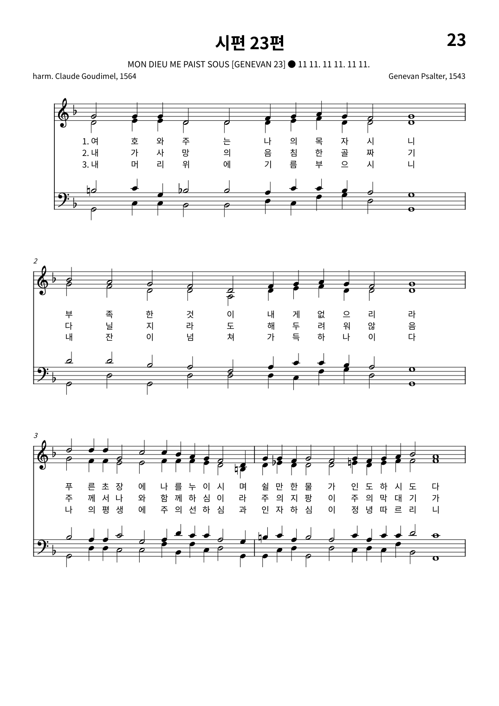

Psalm 23
MON DIEU ME PAIST SOUS [GENEVAN 23] · 11 11. 11 11. 11 11.
English title: The LORD My Shepherd in His Love Defends Me
Tune: Genevan Psalter, 1543 · Harmony: Claude Goudimel, 1564 · Lyrics: Korean adaptation of Psalm 23 from the Korean Revised Version (AI draft adaptation · not yet theologically reviewed) · 3 stanzas
Score PDF MusicXML (for printing) MusicXML (for accompaniment, with prelude and repeats) Read Psalm 23 (Korean Revised Version)
Score
← Psalm 22B ListAccompaniment (in preparation)Psalm 24 →
Lyrics (Korean)
Stanza 1 (Ps. 1~3절)
여호와 주는 나의 목자시니
부족한 것이 내게 없으리라
푸른 초장에 나를 누이시며
쉴 만한 물가 인도하시도다
그 이름 위해 내 영혼 살리사
의의 길로써 인도하시도다
여호와 주는 나의 목자시니
부족한 것이 내게 없으리라
푸른 초장에 나를 누이시며
쉴 만한 물가 인도하시도다
그 이름 위해 내 영혼 살리사
의의 길로써 인도하시도다
Stanza 2 (Ps. 4~5절 앞)
내가 사망의 음침한 골짜기
다닐지라도 해 두려워 않음
주께서 나와 함께하심이라
주의 지팡이 주의 막대기가
안위하나니 원수의 목전에
주께서 내게 상 베푸시도다
내가 사망의 음침한 골짜기
다닐지라도 해 두려워 않음
주께서 나와 함께하심이라
주의 지팡이 주의 막대기가
안위하나니 원수의 목전에
주께서 내게 상 베푸시도다
Stanza 3 (Ps. 5절 뒤~6절)
내 머리 위에 기름 부으시니
내 잔이 넘쳐 가득하나이다
나의 평생에 주의 선하심과
인자하심이 정녕 따르리니
여호와의 집 그곳에서 내가
영원토록 늘 거하겠나이다
내 머리 위에 기름 부으시니
내 잔이 넘쳐 가득하나이다
나의 평생에 주의 선하심과
인자하심이 정녕 따르리니
여호와의 집 그곳에서 내가
영원토록 늘 거하겠나이다